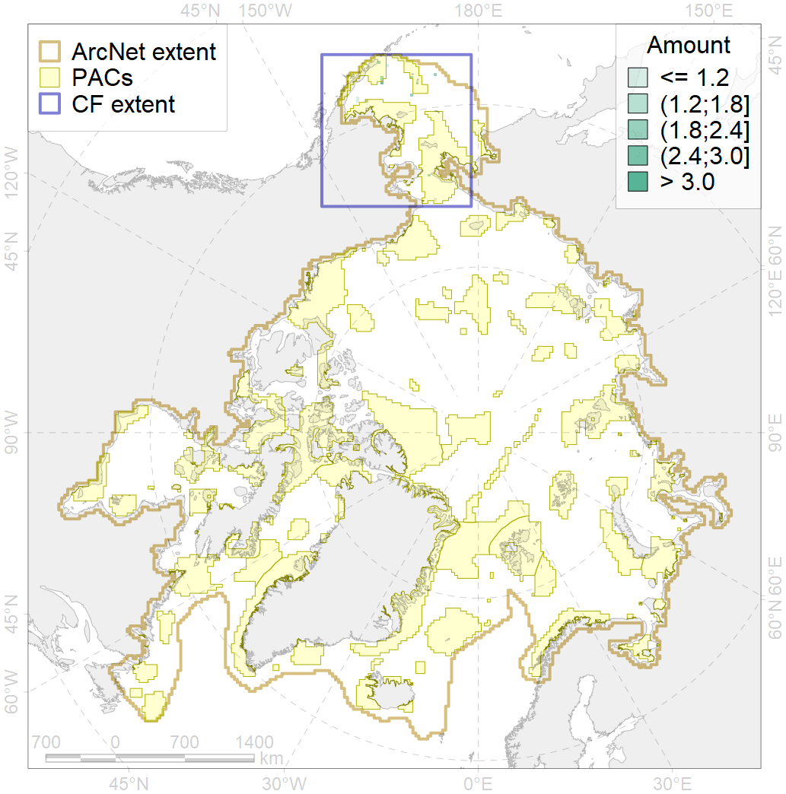
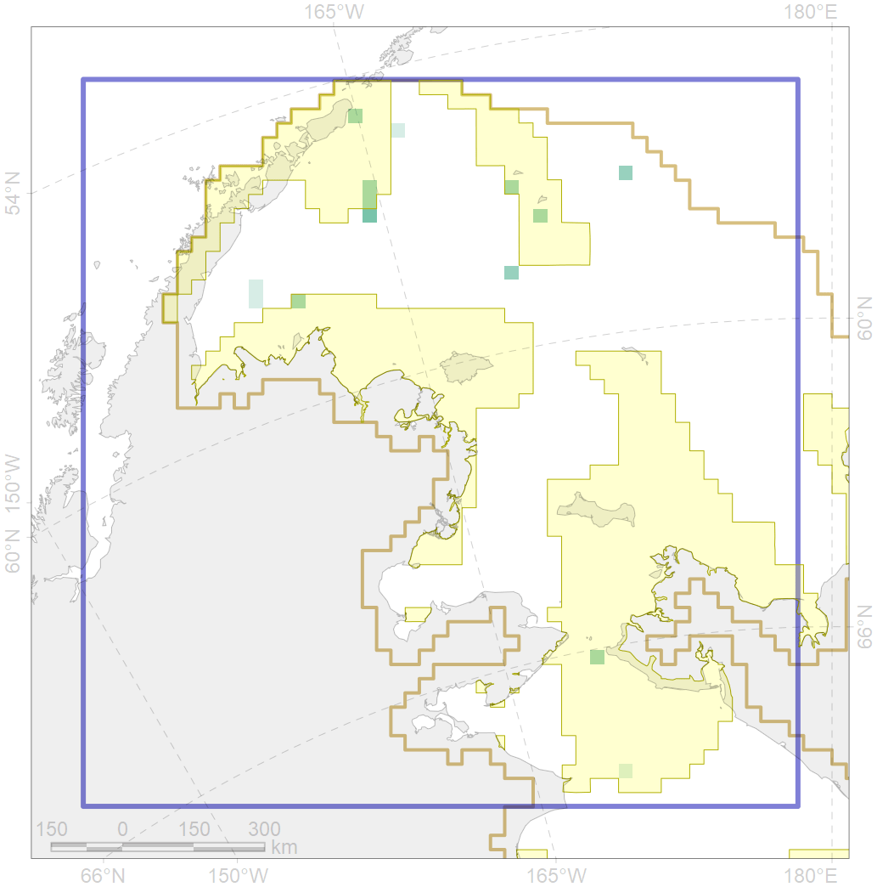

7055

| CF ID | 7055 |
| CF Name | cold corals of the Pacific |
| Time Period | 1915-2014 |
| Source(s) | Freiwald A, Rogers A, Hall-Spencer J, Guinotte JM, Davies AJ, Yesson C, Martin CS, Weatherdon LV (2017). Global distribution of cold-water corals (version 4.0). Third update to the dataset in Freiwald et al. (2004) by UNEP-WCMC, in collaboration with Andre Freiwald and John Guinotte. Cambridge (UK): UN Environment World Conservation Monitoring Centre. URL: http://data.unep-wcmc.org/datasets/3 |
| Seasonality | January - December |
| Depth Horizon | Sea floor and water column above |
| Methodology | Occurrence records were obtained from various sources, including reports, peerreviewed articles and expert consultations. Many individuals and organisations contributed by providing UNEP-WCMC with their data in electronic form. For more information regarding sources please see the “Metadata_Cold_corals.dbf” table included. |
| Author Name | V. Spiridonov |
| Notes | |
| Conservation Target Set in the Scenario | 0.5 |
| Conservation Target Achieved in the Scenario | 0.594 (Scenario: 118.8%) |
| PAC ID | Proportion in the PAC | Contribution to ArcNet Target Achievement | PAC’s Contribution to the Achieved Target |
|---|---|---|---|
| 1 | 24.0% | 45.3% | 38.1% |
| 2 | 16.0% | 27.0% | 22.8% |
| 3 | 8.0% | 12.8% | 10.8% |
| 5 | 12.0% | 23.8% | 20.1% |
| inner | 60.0% | 109.0% | 91.7% |
| outer | 40.0% | 9.8% | 8.3% |